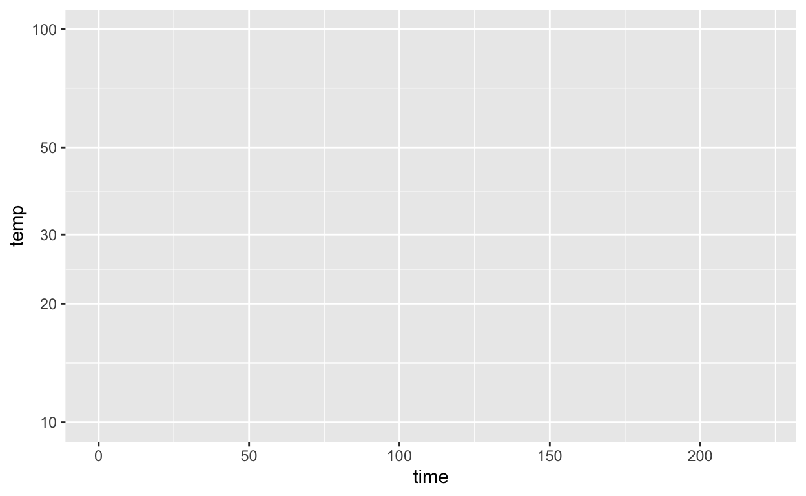

The tick marks on the logarithmic axis are labeled for 10, 20, 30, 50, and 100. Perhaps you expect to see labels at, say, 0, 25, 50, 100 or maybe 0, 50, 100, or even 0, 20, 40, 60, 80, 100, that is, evenly spaced between 0 and 100.
Such even splits of a 0-100 scale are not appropriate for logarithmic scales. One reason is that 0 cannot be on a logarithmic scale in the first place since \(\log(0) = -\infty\).
Another reason is that 1, 3, and 10 are pretty close to an even split of a logarithmic scale running from 1 to 10. It’s something like this:
1 2 3 5 10 x
|----------------------------------------------------|
0 1/3 1/2 7/10 1 log(x)It’s nice to have the labels show round numbers. It’s also nice for them to be evenly spaced along the axis. The 1-2-3-5-10 convention is a good compromise.
The Wikipedia entry on “Common Misconceptions” used to contain this item:
Some cooks believe that food items cooked with wine or liquor will be non-alcoholic, because alcohol’s low boiling point causes it to evaporate quickly when heated. However, a study found that some of the alcohol remains: 25% after 1 hour of baking or simmering, and 10% after 2 hours.
The modeler’s go-to function type for events like the evaporation of alcohol is exponential: The amount of alcohol that evaporates would, under constant conditions (e.g. an oven’s heat), be proportional to the amount of alcohol that hasn’t yet evaporated.
Let’s change pace and think about the “10% after 2 hours” observation. First, recall that the amount left after \(n\) halvings is \(\mbox{amount_left}(n) \equiv \frac{1}{2}^n\) This is an exponential function with base 1/2.
Here is a code box which you can use to do scratch calculations. We’ve pre-filled it with the amount_left() function. Make a guess for n, try it out, then revise the guess until you get the output 10%.
amount_left <- makeFun((1/2)^n ~ n)What you’re doing with the guess-and-check procedure is trying to find the value of an inverse function to \((1/2)^n\); what \(n\) will generate a stated value (e.g. 10%). The computer already provides you with inverse functions for \(2^n\) and \(e^n\) and \(10^n\). Their names are log2(), log(), and log10() repectively. Using log2(), write a function named log_half() that gives the inverse function to \((1/2)^n\).
log_half <- makeFun( log2(...your stuff here ...) ~ x)Suppose you compromise between the half-life needed to reach 25% after one hour and the half-life needed to reach 10% after two hours. Use, say, 33 minutes as the compromise half life. Using the sandbox below, calculate how much would be left after 1 hour for this compromise half life, and how much left after 2 hours.
You can use this Sandbox if you need to do some scratch calculations.
The Bargain Basement store wants to sell its goods quickly. Consequently, they reduce each product’s price \(P\) by 5% per day.
Here’s a sandbox to help you do the next problem.
These three exercises are based on those on page 135 of the MMAC textbook. We have altered them somewhat to use appropriate standards for data storage and updated graphics software,
The data frame Prescription_sales is available to you for use in the code box below. Sales are in billions of US dollars.
The following computer commands will be useful in answering the questions:
gf_point(sales ~ year, data = Prescription_sales) %>%
gf_lims(x = c(2005, 2015))
model1 <- fitModel(sales ~ m*year + b, data = Prescription_sales)
model1 # shows the model as implmented in software
model1(year = 2004)Lines ending in the “pipe” symbol (%>%) are commands that are continued on the next line. To form a complete command, you need to include all the lines that are connected with the pipe.
In MMAC exercise 2.1.53, you are asked to plot the data and verify that the straight-line model is reasonable. This is a bit silly, since there are only 4 data points. Besides, whether a given model is reasonable can only be determined relative to the purpose for which the model is being constructed. The textbook doesn’t explain what the purpose is.
The fitModel() command will generate what the textbook authors call the “best possible” straight-line model. Keep in mind that “best” does not necessarily mean good!
The output of fitModel() is itself a function, as you can see from the function(year, ...) that starts the output. The algorithm in the function is in software jargon most of which will not make any sense to you. Still, you should be able to figure out what the parameters of the model are from the output.
The textbook asks you to evalute the fitted model for year = 2015, treating this as a purely mathematical exercise. Do so and use the value to answer the following question.
Add a line to the graphics command that will draw the “best possible” line on top of the data. Do this by inserting the following line between the gf_point() and the gf_lims() lines:
gf_lm() %>%
Note the pipe symbol at the end of the above line, which says, more or less, “after you do me, go on to do the next thing.”
Let’s presume that the objective behind evaluating the model at year = 2015 is to make a prediction of what drug sales will be in that year.
Regretably, the textbook leaves out a fundamental matter when using a “best possible” model to make a prediction. This is the matter of how precise the prediction is. A standard format for indicating such precision is called a “95-percent prediction interval.” You can add a 95-percent prediction interval to the graph by placing the following as an argument to gf_lm(), that is
gf_lm(interval = "prediction")
Location: CalcZ/_DailyDigitals/DailyDocuments/inst/141Z-Daily-digitals/DD-141Z-05/DD-141Z-05.Rmd 141Z-DD05